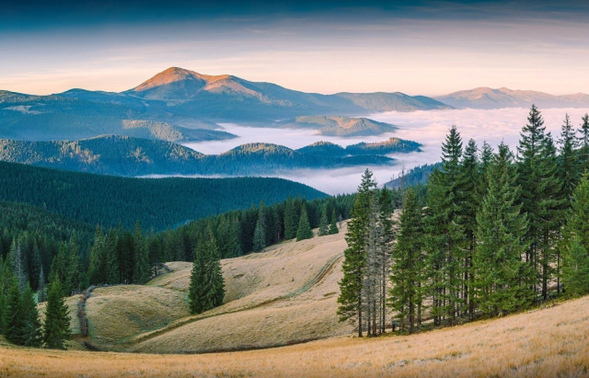
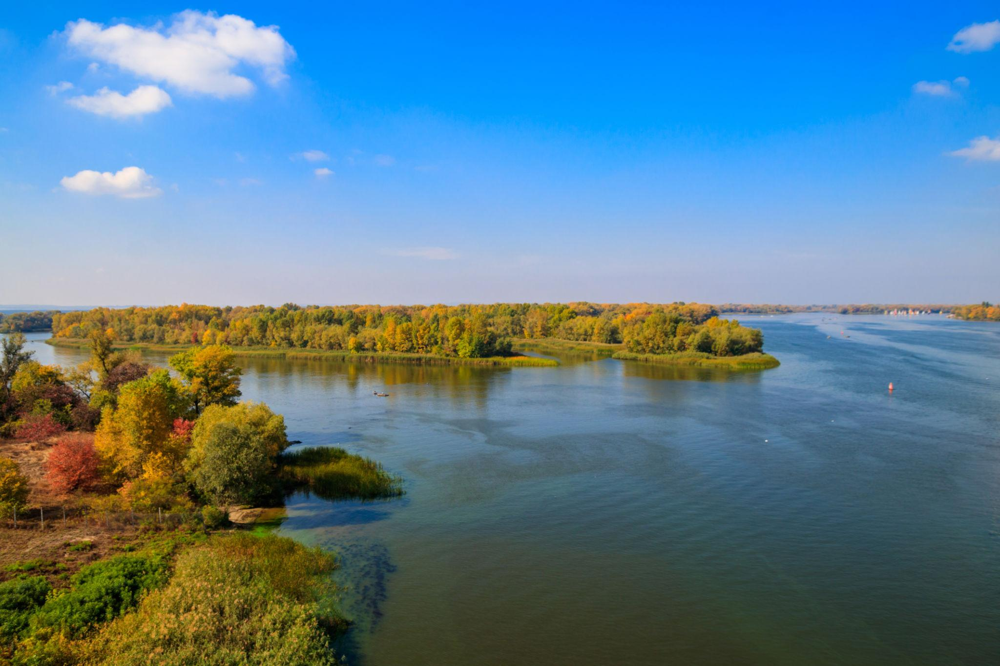
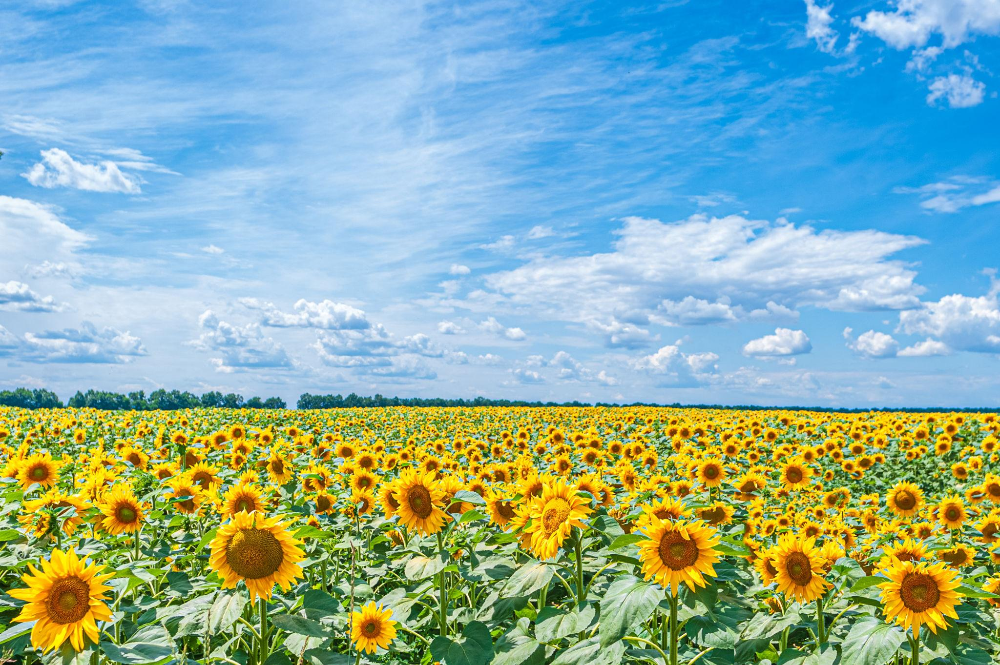

Українські Карпати
Мальовнича частина гірської системи Східних Карпат, що простягається через Івано-Франківську, Закарпатську, Львівську та Чернівецьку області. Це осередок екологічного, лижного та етнотуризму. Найвища точка — гора Говерла (2061 м). Відомі курорти: Буковель, Яремче, Ворохта, Пилипець і Драгобрат.
Завантажити JPG
Дніпро
Дніпро — найбільша річка в Україні та четверта за довжиною в Європі після Волги, Дунаю та Уралу. Це головна водна артерія України, важлива для водопостачання, економіки, енергетики та культури.
Завантажити JPG
Соняшникові поля
Соняшникові поля — один із найяскравіших символів України, що поєднує природну красу, економічне значення та патріотичний зміст. Україна традиційно є одним із світових лідерів за площами посівів і виробництвом соняшникової олії.
Завантажити JPG